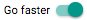
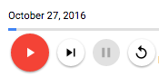
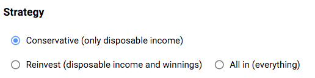

Step 3: Upgrade Buttons and Inputs 1.0
<?code-excerpt path-base=”examples/acx/lottery”?>
In this step you’ll change many of the controls in the app, using these components:
<material-toggle><material-fab><material-checkbox>-
<material-radio>and<material-radio-group>
These controls appear in two custom components: <lottery-simulator> and
<settings-component>.
Run the live example (view source) of the `` version of the app.
Use material-toggle
-
Make the following changes to
lib/lottery_simulator.dart:<?code-excerpt “2-starteasy/lib/lottery_simulator.dart” diff-with=”3-usebuttons/lib/lottery_simulator.dart”?>
--- 2-starteasy/lib/lottery_simulator.dart +++ 3-usebuttons/lib/lottery_simulator.dart @@ -25,8 +25,10 @@ templateUrl: 'lottery_simulator.html', directives: [ HelpComponent, + MaterialFabComponent, MaterialIconComponent, MaterialProgressComponent, + MaterialToggleComponent, ScoresComponent, SettingsComponent, StatsComponent, -
Edit
lib/lottery_simulator.htmlto convert the “Go faster”<div>(and its children) into a<material-toggle>(MaterialToggleComponent), as the following diff shows:<?code-excerpt “{2-starteasy,3-usebuttons}/lib/lottery_simulator.html” from=”/^-\s*\x3C/div\x3E/” to=”/material-toggle”?>
--- 2-starteasy/lib/lottery_simulator.html +++ 3-usebuttons/lib/lottery_simulator.html @@ -54,9 +53,7 @@ - </div> - <div class="controls__faster-button"> - <label> - <input #fastCheckbox type="checkbox" - (change)="fastEnabled = fastCheckbox.checked"> - Go faster - </label> + </material-fab> </div> + <material-toggle class="controls__faster-button" + label="Go faster" + [(checked)]="fastEnabled"> + </material-toggle>
Here’s the resulting UI:

The class behind <material-toggle>,
MaterialToggleComponent,
defines label and checked attributes.
The label attribute contains the main text for the toggle,
which the app previously specified in the <label> element.
A two-way binding to the checked property simplifies setting the
toggle’s state.
Use material-fab
Now convert the buttons that have icons into floating action buttons (FABs).
-
Edit
lib/lottery_simulator.html. -
Convert the Play button from a
<button>to a<material-fab>(MaterialFabComponent), adding theraisedattribute and changing(click)to(trigger):<?code-excerpt “2-starteasy/lib/lottery_simulator.html” diff-with=”3-usebuttons/lib/lottery_simulator.html” from=”play” to=”\/material-fab”?>
--- 2-starteasy/lib/lottery_simulator.html +++ 3-usebuttons/lib/lottery_simulator.html @@ -31,7 +31,7 @@ - <button (click)="play()" + <material-fab raised (trigger)="play()" [disabled]="endOfDays || inProgress" id="play-button" aria-label="Play"> <material-icon icon="play_arrow"></material-icon> - </button> + </material-fab> -
Convert the remaining three buttons in the same way, but add the
miniattribute. For example:<?code-excerpt “2-starteasy/lib/lottery_simulator.html” diff-with=”3-usebuttons/lib/lottery_simulator.html” from=”step” to=”\/material-fab”?>
--- 2-starteasy/lib/lottery_simulator.html +++ 3-usebuttons/lib/lottery_simulator.html @@ -38,6 +38,6 @@ - <button (click)="step()" + <material-fab mini raised (trigger)="step()" [disabled]="endOfDays || inProgress" aria-label="Step"> <material-icon icon="skip_next"></material-icon> - </button> + </material-fab>
Once you’re done, run the app and play with the buttons. They look good, and they have a nice ripple animation when you click them.

Use material-checkbox
The primary UI is looking good!
Now start improving the settings section of the UI,
which is implemented in lib/src/settings/settings_component.* files.
First, change the checkbox to use <material-checkbox> (MaterialCheckboxComponent).
-
Make the following changes to the Dart file for
<settings-component>(lib/src/settings/settings_component.dart):<?code-excerpt “2-starteasy/lib/src/settings/settings_component.dart” diff-with=”3-usebuttons/lib/src/settings/settings_component.dart”?>
--- 2-starteasy/lib/src/settings/settings_component.dart +++ 3-usebuttons/lib/src/settings/settings_component.dart @@ -5,6 +5,7 @@ import 'dart:async'; import 'package:angular/angular.dart'; +import 'package:angular_components/angular_components.dart'; import 'package:components_codelab/src/lottery/lottery.dart'; import 'package:components_codelab/src/settings/settings.dart'; @@ -12,7 +13,13 @@ selector: 'settings-component', styleUrls: ['settings_component.css'], templateUrl: 'settings_component.html', - directives: [NgFor], + directives: [ + MaterialCheckboxComponent, + MaterialRadioComponent, + MaterialRadioGroupComponent, + NgFor + ], + providers: [materialProviders], ) class SettingsComponent implements OnInit { final initialCashOptions = [0, 10, 100, 1000]; -
Edit the template file (
lib/src/settings/settings_component.html), changing the “checkbox” input and its surrounding label into a<material-checkbox>.<?code-excerpt “2-starteasy/lib/src/settings/settings_component.html” diff-with=”3-usebuttons/lib/src/settings/settings_component.html” from=”Annual interest rate” to=”\/material-checkbox”?>
--- 2-starteasy/lib/src/settings/settings_component.html +++ 3-usebuttons/lib/src/settings/settings_component.html @@ -70,15 +58,3 @@ <h3>Annual interest rate</h3> - <label> - <input #investingCheckbox type="checkbox" - [checked]="isInvesting" - (change)="isInvesting = investingCheckbox.checked"> - Investing - </label><br> - <div> - <label *ngFor="let value of interestRateOptions"> - <input - type="radio" - #current - [checked]="value == interestRate" - [disabled]="!isInvesting" - (click)="interestRate = current.checked ? value : interestRate"> + <material-checkbox label="Investing" [(checked)]="isInvesting"> + </material-checkbox><br>
Look how much simpler that code is!
MaterialCheckboxComponent supports a label attribute and
two-way binding to checked, enabling much cleaner HTML.
Use material-radio and material-radio-group
Still working on the settings, convert radio buttons
into <material-radio> components. Each group of radio buttons
is contained by a <material-radio-group> (MaterialRadioComponent).
-
Edit the Dart file for
<settings-component>(lib/src/settings/settings_component.dart) to register MaterialRadioComponent and MaterialRadioGroupComponent:<?code-excerpt “2-starteasy/lib/src/settings/settings_component.dart” diff-with=”3-usebuttons/lib/src/settings/settings_component.dart” from=”directives:” to=”providers:”?>
--- 2-starteasy/lib/src/settings/settings_component.dart +++ 3-usebuttons/lib/src/settings/settings_component.dart @@ -15 +16,7 @@ - directives: [NgFor], + directives: [ + MaterialCheckboxComponent, + MaterialRadioComponent, + MaterialRadioGroupComponent, + NgFor + ], + providers: [materialProviders], -
In the template file (
lib/src/settings/settings_component.html), find the string"radio". Change the enclosing label to<material-radio>, and then the immediately enclosing<div>to<material-radio-group>. -
Move the input’s
[checked]and(click)code into the material-radio component. If the input has[disabled]code, move that too. -
Change
(click)to(checkedChange), andcurrent.checkedto$event. Here’s why: MaterialRadioComponent fires checkedChange when the radio button’s selection state changes. The event’s value is true if the radio button has become selected, and otherwise false. -
Remove the
<input>tag. Your code changes should look like this:<?code-excerpt “2-starteasy/lib/src/settings/settings_component.html” diff-with=”3-usebuttons/lib/src/settings/settings_component.html” from=”Initial cash” to=”\/material-radio-group”?>
--- 2-starteasy/lib/src/settings/settings_component.html +++ 3-usebuttons/lib/src/settings/settings_component.html @@ -6,11 +6,8 @@ <h3>Initial cash</h3> - <div> - <label *ngFor="let item of initialCashOptions"> - <input - type="radio" - #current - [checked]="item == initialCash" - (click)="initialCash = current.checked ? item : initialCash"> + <material-radio-group> + <material-radio *ngFor="let item of initialCashOptions" + [checked]="item == initialCash" + (checkedChange)="initialCash = $event ? item : initialCash"> ${{ item }} - </label> - </div> + </material-radio> + </material-radio-group> -
Repeat the process for the remaining radio button groups.
-
Run the app. You might notice a small problem with the appearance of the Strategy settings:

-
Fix the appearance problem by editing
lib/src/settings/settings_component.cssto add a rule that maximizes that component’s width:<?code-excerpt “2-starteasy/lib/src/settings/settings_component.css” diff-with=”3-usebuttons/lib/src/settings/settings_component.css”?>
--- 2-starteasy/lib/src/settings/settings_component.css +++ 3-usebuttons/lib/src/settings/settings_component.css @@ -1,5 +1,5 @@ -.betting-panel label { - display: block; +.betting-panel material-radio { + width: 100%; } h3:not(:first-child) {
The app is now much better looking, but it still displays too much information. You’ll fix that in the next step.
Problems?
Check your code against the solution in the 3-usebuttons directory.